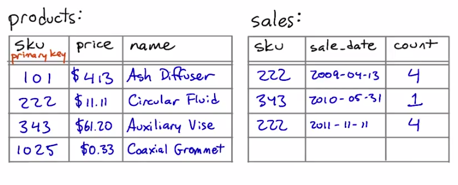

11. 计算不符合条件的行
计算不符合条件的行
Question:
计算不符合条件的行
你在此课程中之前已经多次见到如何计算单个表格的行数。对列运行 count 汇总函数将返回表格中的行数，或者 group by 子句的每个值的行数。
例如，你在第 2 节课中见到了以下查询：
select count(*) from animals;
-- 返回动物园中的动物数量
select count(*) from animals where species = ‘gorilla’;
-- 返回大猩猩的数量
select species, count(*) from animals group by species;
-- 返回每个物种的名称和该物种的动物数量
如果你想获得 join 表格的数量，则更加复杂。例如我们在第 4 节课见到的以下两个表格，即商店的 products 和 sales 表格：

假设我们想知道每个商品的售卖次数。也就是说，对于 products 表格中的每个 sku 值，我们想知道它出现在 sales 表格中的次数。我们可以运行以下查询：
select products.name, products.sku, count(*) as num
from products join sales
on products.sku = sales.sku
group by products.sku;但是该查询可能并不能完全获得我们希望的结果。如果特定的 sku 从未出售，即 sales 表格中没有该条目，那么该查询将根本不返回一行内容。
如果想看到某行里面显示数字 0，那么我们就会失望了！
但是，有一种方法可以使数据库在某行里显示 0。为此，我们需要更改此查询的两个地方：
select products.name, products.sku, count(sales.sku) as num
from products left join sales
on products.sku = sales.sku
group by products.sku;此查询将使 products 表格中每个商品各占一行，即使在 sales 表格中没有销量的商品亦不例外。
哪里出现了变化？首先，我们使用了 count(sales.sku) 而不是 count(*) 。意味着数据库将计算 sales.sku 有定义的行，而不是所有行。
其次，我们使用了 left join 而不是简单的 join 。
那么什么是 left join 呢？
SQL 支持各种连接形式。你在这门课程中之前见过的连接类型是 inner 连接，也是最常见的连接类型，以至于 SQL 不需要我们指明为“inner join”。
第二种最常见的类型是 left join ，它的对立面是 right join 。“left”和“right”表示连接运算符左右两侧的表格。（上述示例中，左侧表格是 products ，右侧表格是 sales 。）
常规 (inner) 连接仅返回两个表格中符合连接条件的行。 left join 返回所有这些行以及 左侧 表格中有但是右侧表格中没有的行。 right join 对 右侧 表格执行相同的操作。
（正如“join”是“inner join”的简称，“left join”实际上是“left outer join”的简称。但是 SQL 只要求我们写成“left join”，输入的内容少多了，所以我们将这么写。）
练习
在下一页中，你将看到一个用 count(*) 和 inner join 写成的查询。请试着运行该查询，然后如上所述地更改该查询，看看结果如何！
Start Quiz:
Solution:
Counting what isn't there - Solution
Here's the original query from the quiz again —
select programs.name, count(*) as num
from programs join bugs
on programs.filename = bugs.filename
group by programs.name
order by num;
And here's one possible corrected version:
select programs.name, count(bugs.filename) as num
from programs left join bugs
on programs.filename = bugs.filename
group by programs.name
order by num;
Something to watch out for: What do you put in the count aggregation? If you leave it as count(*) or use a column from the programs table, your query will count entries that don't have bugs as well as ones that do.
In order to correctly report a zero for programs that don't have any entries in the bugs table, you have to use a column from the bugs table as the argument to count . For instance, count(bugs.filename) will work, and so will count(bugs.description) .